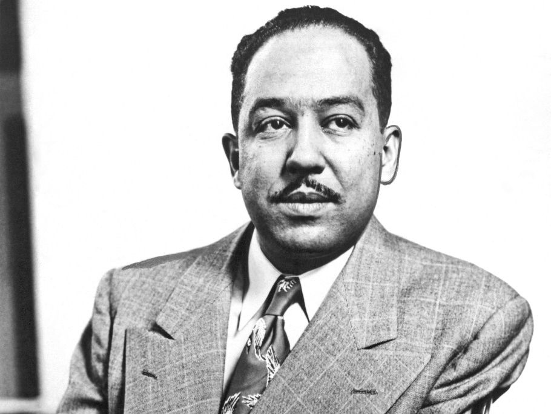

Langston Hughes
Born on Feburary 1st, 1902

The Ballot And Me is a short play by the Author Langston Hughes.
This play covers the history of Black enfranchisment in America from the 18th century. The play features the voices of freedom fighters and the stories of every Black federal elected official from Reconstruction to 1965.